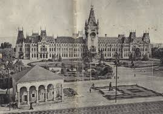
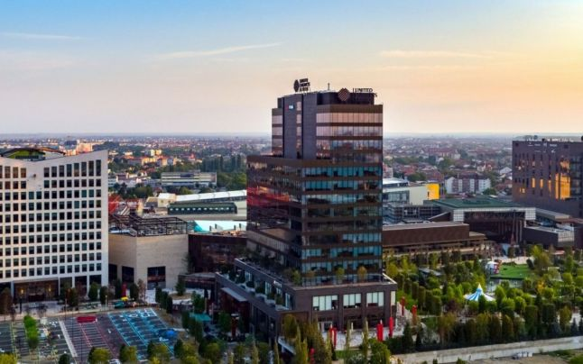

Iași is the second largest city in Romania, and the seat of Iași County. Located in the historical region of Moldavia, Iași has traditionally been one of the leading centres of Romanian social, cultural, academic and artistic life. The city was the capital of the Principality of Moldavia from 1564 to 1859, then of the United Principalities from 1859 to 1862, and the capital of Romania from 1916 to 1918. Known as The Cultural Capital of Romania, Iași is a symbol in Romanian history. The historian Nicolae Iorga said "There should be no Romanian who does not know of it". Still referred to as The Moldavian Capital, Iași is the main economic and business centre of the Moldavian region of Romania. In December 2018, Iași was officially declared Historical capital of Romania. Home to the oldest Romanian university and to the first engineering school, Iași is one of the most important education and research centres of the country, and accommodates over 60,000 students in 5 public universities. The social and cultural life revolves around the Vasile Alecsandri National Theater (the oldest in Romania), the Moldova State Philharmonic, the Opera House, the Iași Athenaeum, a famous Botanical Garden (the oldest and largest in Romania), the Central University Library (the oldest in Romania), the high quality cultural centres and festivals, an array of museums, memorial houses, religious and historical monuments.
- History
- A now lost inscription on a Roman milestone found near Osijek, Croatia by Matija Petar Katančić in the 18th century, mentions the existence of a Jassiorum municipium, or Municipium Dacorum-Iassiorum from other sources. Other explanations show that the name originated from the Iranian Alanic tribe of Jassi, having same origin with Yazyges tribes Jassic people. In medieval times the Prut river was known as Alanus fluvius and the city as Forum Philistinorum. From this population derived the plural of town name, "Iașii".

- Middle Ages
- The name of the city is first found in a document from 1408. This is a grant of certain commercial privileges by the Moldavian Prince Alexander to the Polish merchants of Lvov. However, as buildings older than 1408 still exist, e.g. the Armenian Church believed to be originally built in 1395, it is certain that the city existed before its first surviving written mention. Around 1564, Prince Alexandru Lăpușneanu moved the Moldavian capital from Suceava to Iași. Between 1561 and 1563, a school and a Lutheran church were founded by the Greek adventurer Prince, Ioan Iacob Heraclid. In 1640, Vasile Lupu established the first school in which the Romanian language replaced Greek, and set up a printing press in the Byzantine Trei Ierarhi Monastery (Monastery of the Three Hierarchs; built 1635–39). Between 15 September - 27 October 1642, the city hosted the Synod of Jassy. In 1643, the first volume ever printed in Moldavia was published in Iași.
- 20th century
- During World War I, Iași was the capital of a much reduced Romania for two years, following the Central Powers' occupation of Bucharest on 6 December 1916. The capital was returned to Bucharest after the defeat of Imperial Germany and its allies in November 1918. In November–December 1918 Iași hosted the Jassy Conference. During the war, while the full scale of the Holocaust remained generally unknown to the Allied Powers, the Iași pogrom stood as one of the known examples of Axis brutality toward the Jews. The pogrom lasted from 29 June to 6 July 1941, and over 13,266 people, or one third of the Jewish population, were massacred in the pogrom itself or in its aftermath, and many were deported. In May 1944, the Iași area became the scene of ferocious fighting between Romanian-German forces and the advancing Soviet Red Army and the city was partially destroyed. The German Panzergrenadier Division Großdeutschland won a defensive victory at the Battle of Târgu Frumos, near Iași, which was the object of several NATO studies during the Cold War. By 20 August, Iași had been taken by Soviet forces. Iași experienced a major wave of industrialisation, in 1955–1989. During this period of time, it received numerous migrants from rural regions, and the urban area expanded. In the communist era, Iași saw a growth of 235% in population and 69% in area. The local systematization plans of the old city started in 1960 and continued in the 1970s and 1980s as part of the larger national systematization program; however, the urban planning was sometimes arbitrary and followed by dysfunctions. By 1989, Iași had become highly industrialised, with 108,000 employees (representing 47% of the total workforce) active in 46 large state-owned enterprises, in various industries: machine building and heavy equipment, chemical, textile, pharmaceutical, metallurgical, electronics, food, energy, building materials, furniture.
Economy

Iași is an important economic centre in Romania. The local and regional economy relies on industry and service sector institutions and establishments. The most important service sectors are related to education, health care, banking, research, culture, government and tourism. The city is an important information technology sector centre, with the presence of several large multinational companies (Amazon, Oracle, Continental, Conduent, Xerox, Accenture, Capgemini, SCC) and many other local and foreign companies such as Bentley Systems, Bitdefender, Comodo, Endava, Ness, Pentalog, or TiVo (to name a few), as well as two universities which offer specific degree programs. Industry forecasts expect the Iași ITC workforce to grow from the current 16,000 (end of 2016) employees to more than 33,000, by 2030. An estimated workforce of more than 35,000 employees is active in Iași's industrial manufacturing sector, particularly in automotive (Delphi, Lear, Conex Distribution), pharmaceutical industry (Antibiotice Iași, Fiterman Pharma, Ircon SRL), metallurgical production (ArcelorMittal, Technosteel LBR), aerospace (BMT Aerospace), industrial equipment (Agmus, ASAM, Fortus), energy (E.ON Moldova Distribuție, Veolia Energie), textiles and clothing (Benetton, Iași Conf, Iașitex), home appliances (Tehnoton), building materials (Brikston, Build Corp), food (Compan, Panifcom, Zeelandia). Located in an area recognised for its vineyards and wines, Iași is part of a traditional wine region with viticultural centres surrounding the city: Copou, Bucium, Uricani, Comarna, Plugari, and Probota. Iași County is also home to renowned Cotnari and Bohotin vineyards.